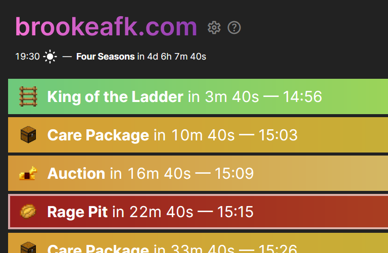
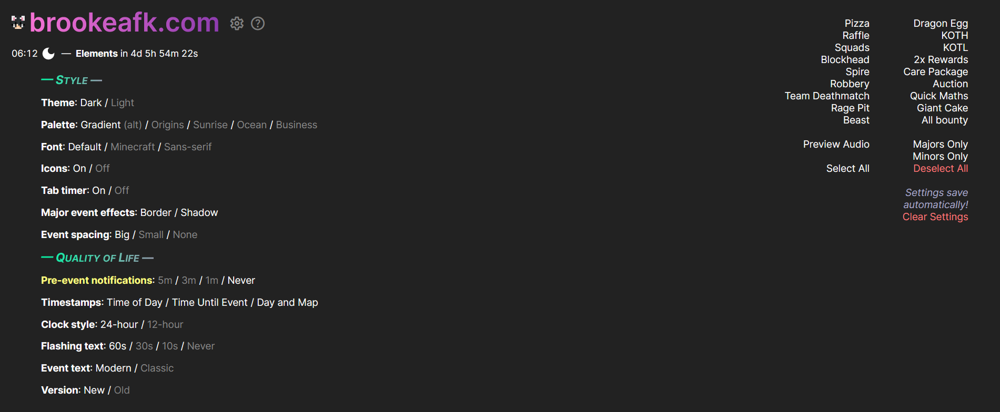

From brookeafk.com
También disponible en español. (Also available in Spanish).
Welcome! Thanks for checking out this help article.
Basic Site Usage
Settings
Custom Palettes
Frequently Asked Questions
Link to Support Discord Server
Basic Site Usage
brookeafk.com is a website used to track when events in The Hypixel Pit occur. This can be helpful if players want to participate in specific events or are curious about what's about to happen in-game.
On the site, events are displayed in order. The timestamps on the right are a countdown until the event happens and a 24-hour timestamp as to the time of the event happening in your local time zone. For major events, this countdown and timestamp refer to when the three-minute in-game countdown for the event starts, not the actual starting time of the event. This is to be consistent with Pit Supporter. Major events are also indicated with a faint white outline around the event.
Settings
To change brookeafk.com's settings, click the Settings icon (settings). A settings menu will drop down with various items to click.
The items are the following:
- Theme: Changes whether the background is black or white. It also changes the default palettes!
- Palette: Changes the colors of the events. There's twelve default ones in total; try clicking each one to see the colors. However, starting in v1.1.0, you can create a custom palette to use on the site! Read more about it here.
- Font: Controls the typeface of everything on the site. The default font is Inter, which is all of this text. Minecraft is this typeface. Sans-serif defaults to the default sans-serif font on your browser (this one). Learn how to change this here: Firefox – Chrome – Edge
- Pre-event notifications: These notify the user when certain events are about to start.
Upon clicking5m,3m, or1m, more settings options will appear. - Audio notifications: Whether you'll be notified through a chime on the site.
- Desktop notifications: Whether you'll be notified through notifications on your desktop.
- Additionally, bell icons (notifications) will appear to the right of the event names on the right side of the page. Clicking one of these will enable notifications for that event.
- Timestamps: Toggles certain countdown timers and clocks. Time of Day is the timestamp that displays when an event will happen (e.g. 11:56). Time Until Event is the countdown timer to each event (e.g. 23m 51s). Day and Map controls the bar that displays the day-night cycle and the map change timer.
NOTE: Many Chrome users have told me that they don't receive notifications when brookeafk.com isn't focused. This should be fixed as of April 14th, 2023. If you're having this problem, make sure Chrome can send notifications or switch to another non-Chromium browser. Alternatively, just create a new window in Chrome (Control + N) and use that for your brookeafk.com needs.
- Clock style: Whether the timestmaps appear as 24-hour (17:13) or 12-hour (5:13 pm).
- Flashing text: Changes the amount of time until an event starts flashing and turning red. You can disable it by pressing
Never. - Event text: Changes how events are displayed. Modern uses the new style, which places the event first (King of the Ladder in 4m 10s — 12:01), while Classic uses the style that was used on brookeafk.com in 2022 (4m 10s: King of the Ladder (12:01)) Classic mode also changes the names of events to look like they did before (KOTH, KOTL, All bounty) instead of their full names (King of the Hill, King of the Ladder, Everyone Gets a Bounty.)
- Version: Toggles between the current version and the old (v0.6.7) one.
- Clicking the names of events on the right (Pizza, Raffle, Squads, etc.) will toggle the visibility of the event. Selecting Majors Only will automatically only show major events. Minors Only will do the same for minor events. Select All and Deselect All will show and hide all events respectively. Clear Settings will completely erase all settings you've entered into the site. Preview Audio will play the aforementioned chime to make sure it works on your device.
If the settings aren't saving for you for some reason, you can just embed the settings in the URL. To do that, just select which settings you want to implement to the site (see below), and add them to the end of the URL with a question mark, such as https://brookeafk.com?palette=3&theme=light. Such settings are below:
theme:darkfor the dark theme,lightfor the light one.palette:gradients0for the default gradient color scheme,gradients1for the alternate one,0for the Origins color scheme,1for Sunrise/Sunset,2for Ocean/Beachside,3for Business/Bubblegum, and4for Phoenix/Sienna. If you have a custom palette, you can input its code here instead.font:0for Inter,1for sans-serif,2for Minecraft.clock:24for 24-hour time,12for 12-hour time.
Note that it's possible to type in weird things into the URL (e.g. clock=999) that aren't supported. Such items will either not work or completely break the site on your end. To reset these, click the Clear Settings and URL button.
Settings imported from the old version of brookeafk.com also are compatible with the modern version. Settings in the URL will override whatever you have stored in localStorage.
Custom Palettes
- You can create a custom palette by visiting https://brookeafk.com/palette.
- Create a palette by clicking on the white boxes to the right of the eighteen events.
- Once you're done designing, click on the purple box beneath the events.
- To import the palette, copy the link in the "URL" section at the bottom of the page and paste it into your browser, or copy the code and click the Settings gear, Custom under the Palette sub-menu, Import, and then paste the code and press Enter.
- Palette names shouldn't be longer than 400 characters and may break if they contain
¤ U+00A4 CURRENCY SIGN.
You can share a palette by giving your friends the URL from the palette generator. Once they open the link, they'll see something like this (try it yourself here):

If they select "Yes!", they'll be able to give a name to the palette.
You can currently only have one custom palette enabled at a time (why would you need more?), but I'll try to fix this later.
Frequently Asked Questions
⸺ in order of importance ⸺
The timestamps on the site are wrong
- This is most likely an issue with your system clock being wrong, too. I recommend you fix that first—it'll mess with a bunch of other web pages, too—but if you're looking for a quick solution, try appending
?offset=MINUTESto the URL, whereMINUTESis the number of minutes you'd like all of the timestamps to change by.https://brookeafk.com?offset=-180would move all of the timestamps backwards by three hours. Use?offset=0to reset it.
There's no events
- First of all, try reloading the page (use Control + Shift + R). That'll usually solve it. If that doesn't work, you should probably reload the page again, because sometimes it usually takes two. If that doesn't work, you've officially exhausted my supply of ideas. If that's the case, please contact me in the Pit Resource Support Discord server and explain to me the issue (no events).
How do I go to the old version of brookeafk.com?
- Is the site too gradient-y for you now? Click here or go to brookeafk.com/2022. I won't be mad.
What's new in the redesign?
- Notifications should actually work, now. While that alone would be a groundbreaking, revolutionary feature, I've also added icons, gradients, a map change timer, a few more settings, this help guide, and the site should run a lot faster, now. I had to re-write way too many lines of code that my younger, more malicious self hastily wrote in at 2 in the morning.
I need an older version of the site.
- Really? Those old versions were pretty terrible. If you truly desire my laggy, buggy code, four early versions of the site are available below:
v0.1 • v0.1.5 • v0.2.1 • v0.6.7.
How do I get a quote on the bottom of the site?
- The quotes on the bottom were the people who supported me back when brookeafk.com was in its archaic spreadsheet phase and didn't have nearly as much support as it does now. I'm currently not looking for more quotes on the bottom of the site—my apologies.
Who are you?
- I'm Brooke! I made this site over a year ago to track when dragon eggs were happening since I was a non and desperately needed the XP they gave. I've also helped make a couple of other things, like the Pit Wiki and this cool player tracker. I also help with some Statsify development.
Why did you redesign the site, anyway?
- To me, it looked a bit aged—the Minecraft font certainly didn't help. I wanted to take an already-existing project and see if I could make it better. The new version also has performance improvements, since there was a lot to improve (the old version of the site tries changing the color of each event twenty-five times a second). In its current state, the new site runs significantly faster than the old one, despite how flashy and new it looks. I think it looks a lot better now, but if you disagree, you can always go back.
Why does your code suck?
- It was my first JavaScript project 🥲 I mean, if it works, it works... right? Why are you even looking at the code, anyway? If it's not working, that's a whole other issue. The GitHub repo for this page is here.
Why didn't you use ClumplunkleJS or [insert random JavaScript library]? Why's it all client-side?
- There's no need to. It's a really simple site with a simple purpose. What would I use something like that for, anyway? (also because I can't be bothered learning React)
But you could've just implemented Clumplunkle's BlorgleFlorgle() method and it would cure cancer and—
- shut up !!! !! ! ! !!! ! ! 1!
Are you in need of additional assistance, or have a question that's not listed here? Please join the Pit Resource Support Discord server and create a private ticket. Alternatively, you can contact me through this project's GitHub repository.